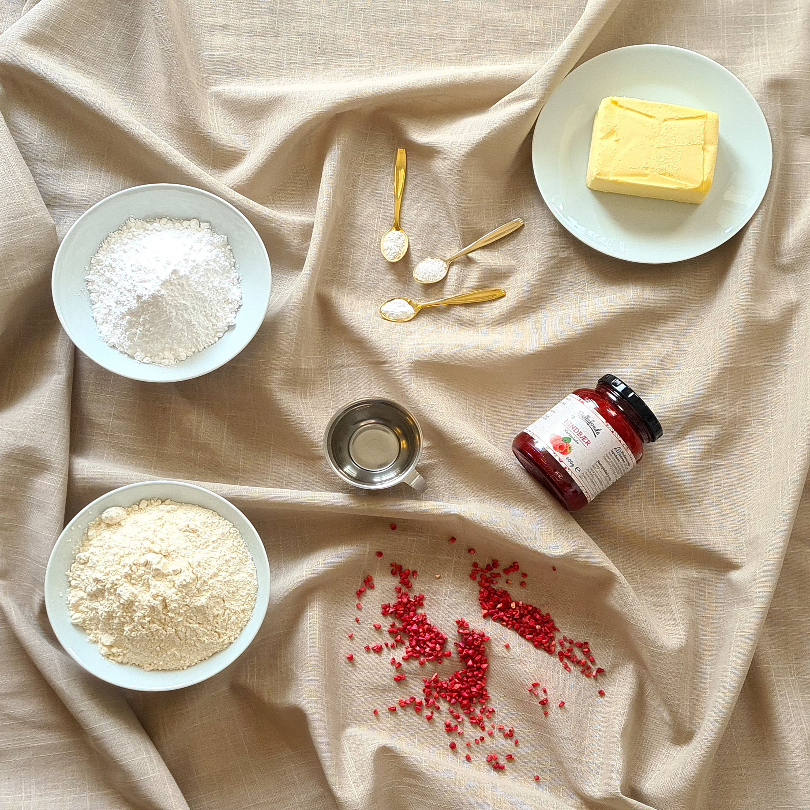

Hindbærsnitter
Estimeret tid: 2 timer
Budget: 100 kr.
Antal: Ca. 30 runde snitter
Denne lille lækre sag kender vi alle til. Den er slet ikke til at modstå. En lækker mørdej lagt
sammen med marmelade, glasur på toppen og noget krymmel. Den er bedst kendt med hvid glasur og tivolikrymmel, men slip fantasien løs og sæt dit personlige præg på den! Du kan f.eks. skifte den klassiske hindbærmarmelade ud med solbær, jordbær, brombær? Kun fantasien sætter grænser.
Versionen her er lavet med hindbærmarmelade, hvid glasur, frysetørret hindbær og pistacienødder.
Velbekomme!


Opskrift
1. Bland flormelis. hvedemel, vaniljesukker, bagepulver og salt i en skål.
2. Skær smørret i tern og tilsæt det sammen med vand i skålen.
3. Ælt nu dejen med dine fingre til du får en ensartet dej. Jo mere varme dejen får fra dine hænder, jo mere samler den sig.
4. Pak dejen ind i husholdningsfilm og sæt den på køl i 1 time.
5. Del dejen i to klumper. Drys med mel på bordet. Rul nu den ene klump ud med en kagerulle.
6. Find nu et glas som har den rette størrelse, som du ønsker. Pres nu små ”småkager” og placer dem på en bageplade med bagepapir.
7. Gentag med den anden klump. Der skal cirka laves 80 stk.
8. Opvarm ovnen på 200 grader varmluft og bag dem i 8-10 minutter til de er gyldne.
9. Lad dem afkøle på en bagerist.
10. Når de er afkølet putter du en teskefuld syltetøj i mellem to småkager og presser dem sammen.
11. Rør nu din glasur af flormelis og kogende vand. Læg en halv teskefuld på hver kage og drys med frysetørret hindbær eller krymmel.
12. Pak dem ned i en lufttæt beholder. Sæt dem evt. på køl, så holder de længere.